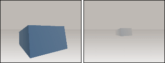

Hilfe
CameraFogColor

Aufruf
Parameter
Rückgabewert
Beschreibung
Beispiel
Siehe auch
CameraFogColor kamera%, rot#, gruen#, blau#
Parameter
| kamera% | Identität einer Kamera |
| rot# | Rotanteil 0-255 |
| grün# | Grünanteil 0-255 |
| blau# | Blauanteil 0-255 |
Rückgabewert
-
Beschreibung
Mit CameraFogColor wird die Nebelfarbe einer Kamera eingestellt. Die einzelnen Farbanteile können nur im Bereich von 0-255 liegen.
Je weiter ein Objekt von der Kamera entfernt ist, desto mehr Nebelfarbe wird hinzugerechnet. Dadurch haben weit entfernte Objekte weniger unterschiedlichere Farben - es entsteht ein Nebeleffekt.
Dieser Effekt wird meistens dazu benutzt, einen Pop-Up-Effekt zu verhindern, wenn ein Objekt in den Kamerabereich kommt.
Die Standard-Nebelfarbe ist schwarz (0,0,0) und die Standard-Entfernung des Nebels ist 1-1000. Die Entfernung kann mit CameraFogRange geändert werden.
geändert werden.

Beispiel
Hier wird demonstriert, wie die Farb- und Nebeleffekte der Kamera wirken
Graphics3D 640, 480, 16, 1
SetBuffer BackBuffer()
camera = CreateCamera()
PositionEntity camera, 0, 1, 0
CameraClsColor camera, 190, 185, 180
CameraFogColor camera, 180, 175, 170
CameraFogRange camera, 1, 10
light = CreateLight()
RotateEntity light, 90, 0, 0
plane = CreatePlane()
cube = CreateCube()
RotateEntity cube, 10, 30, 0
PositionEntity cube, 0, 0, 5
EntityColor cube, 100, 150, 200
While Not KeyDown(1)
If KeyHit(057) = 1 Then
fog_mode = 1 - fog_mode
CameraFogMode camera, fog_mode
End If
If KeyDown(205) = 1 Then TurnEntity camera, 0, - 1, 0
If KeyDown(203) = 1 Then TurnEntity camera, 0, 1, 0
If KeyDown(208) = 1 Then MoveEntity camera, 0, 0, - 0.05
If KeyDown(200) = 1 Then MoveEntity camera, 0, 0, 0.05
RenderWorld
Text 0, 0, "Mit Cursortasten kannst du dich bewegen"
Text 0, 20, "Mit Leertaste kann Nebel eingeschaltet werden"
If fog_mode = 0 Then Text 0, 40, "CameraFogMode 0"
If fog_mode = 1 Then Text 0, 40, "CameraFogMode 1"
Flip
Wend
End
SetBuffer BackBuffer()
camera = CreateCamera()
PositionEntity camera, 0, 1, 0
CameraClsColor camera, 190, 185, 180
CameraFogColor camera, 180, 175, 170
CameraFogRange camera, 1, 10
light = CreateLight()
RotateEntity light, 90, 0, 0
plane = CreatePlane()
cube = CreateCube()
RotateEntity cube, 10, 30, 0
PositionEntity cube, 0, 0, 5
EntityColor cube, 100, 150, 200
While Not KeyDown(1)
If KeyHit(057) = 1 Then
fog_mode = 1 - fog_mode
CameraFogMode camera, fog_mode
End If
If KeyDown(205) = 1 Then TurnEntity camera, 0, - 1, 0
If KeyDown(203) = 1 Then TurnEntity camera, 0, 1, 0
If KeyDown(208) = 1 Then MoveEntity camera, 0, 0, - 0.05
If KeyDown(200) = 1 Then MoveEntity camera, 0, 0, 0.05
RenderWorld
Text 0, 0, "Mit Cursortasten kannst du dich bewegen"
Text 0, 20, "Mit Leertaste kann Nebel eingeschaltet werden"
If fog_mode = 0 Then Text 0, 40, "CameraFogMode 0"
If fog_mode = 1 Then Text 0, 40, "CameraFogMode 1"
Flip
Wend
End
Siehe auch